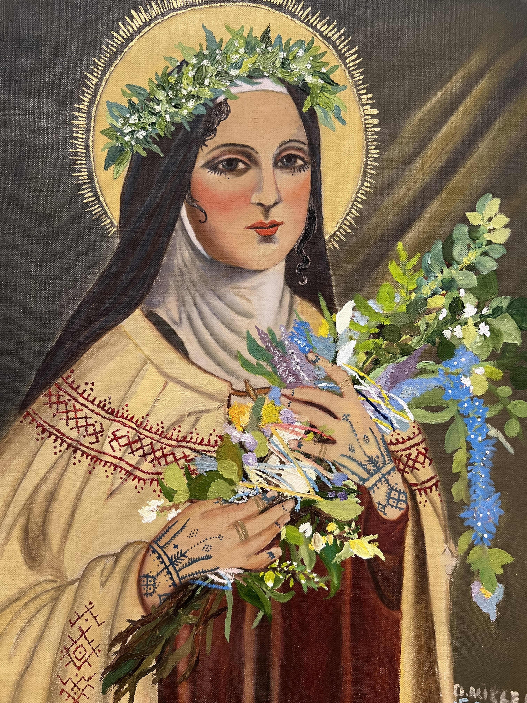

As someone who is interested in Wiccan and folklore magic, I like to imagine what religious figures would look like if the older religions had stayed in power instead of Christianity. I then referenced artworks of Nunes and reimagined them as priestesses instead, making sure to include images of specific plants like sage and symbols on the robes.
